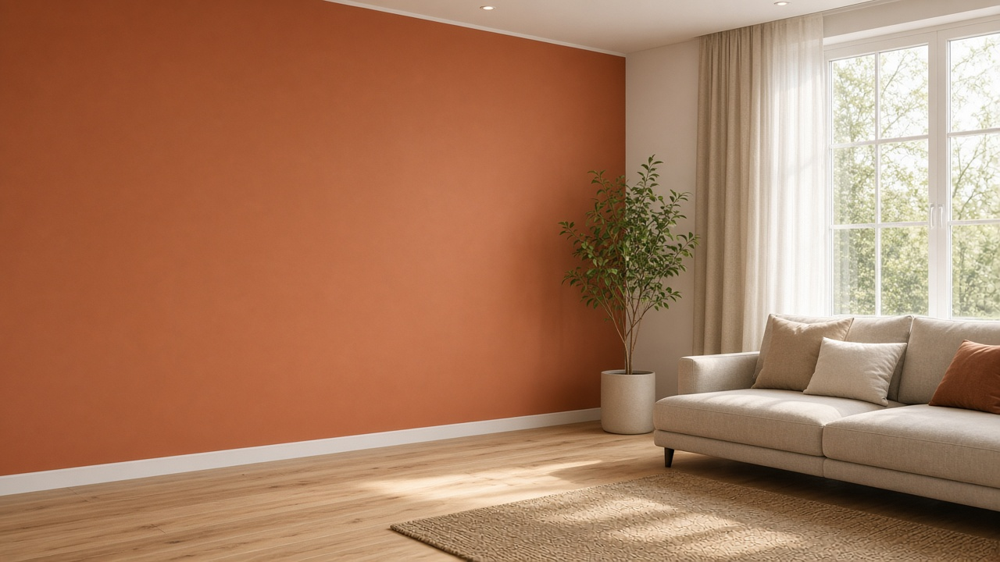

Wandfarbe ausprobieren
Meisterbetrieb seit 1888
Farbe, die Ihr
Zuhause verdient
Willkommen beim Malerfachbetrieb Neininger in Rastatt — ruhige Beratung, präzise Ausführung, Räume zum Ankommen.
Seit 1888
Rastatt & Umgebung
Persönlich vor Ort